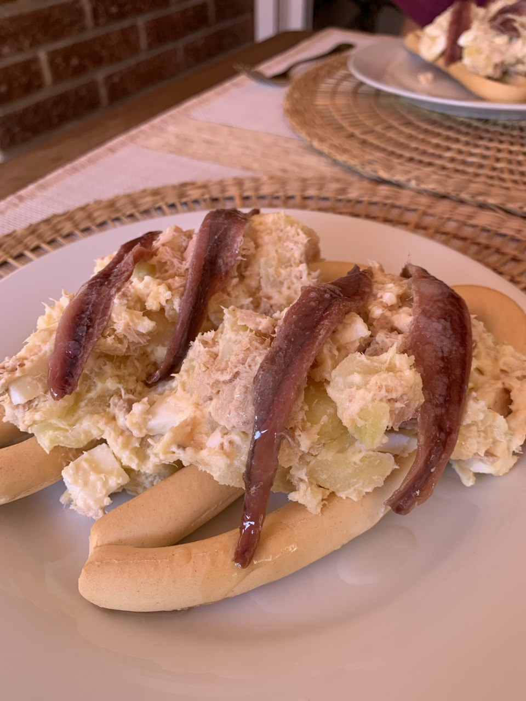

← Menú
Ensaladilla rusa
Ingredientes
2 patatas medianas (400 g)
2 huevos duros
2 latas de atún
2 cucharadas de mayonesa
Preparación
En un cazo.
Hervir la
patata
a trozos 20 minutos hasta que queden blandas. Poner en un bol y dejar enfriar.
En el bol.
Echar los
huevos duros
cortados a trozos, el
atún
y 2 cucharadas muy colmadas de
mayonesa
. Remover con la cuchara.
Servir.
Servir frío con un cuenquito de
picos
. Si se quiere convertir en marinera, poner sobre una rosquilla y colocar una anchoa encima.
